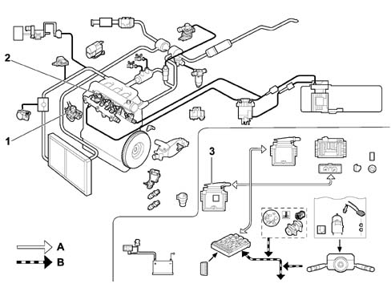

SUBASSEMBLY GRAPHIC INDEX
- Path
- Descriptions > 10 ENGINE > 1060 DIESEL INJECTION SYSTEM > SUBASSEMBLY GRAPHIC INDEX
- Kind
- system description
- Applies to
- engines: 2.0 16V JTD, 2.2 16V JTD; all production periods
- Interactive page
- https://sloeber94.github.io/elrnDB-fUlss/en/#/179006602
Applies to: engines: 2.0 16V JTD, 2.2 16V JTD; all production periods

1, Pressure pump and control.
2, Injectors and pipes.
3, Diesel injection pressure pump electronic drive.